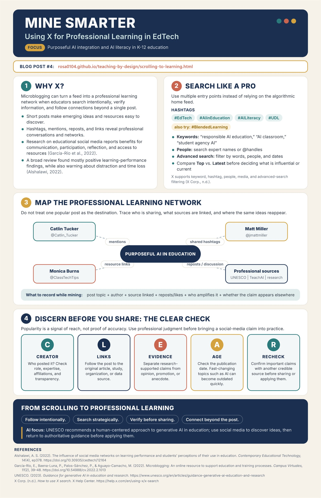

From Scrolling to Learning: Mining X for Professional Growth
Social media can be endless scrolling, or an ongoing professional learning network when educators approach it intentionally.
Social media can easily become a place for endless scrolling, but it can also function as an ongoing professional learning network when educators approach it intentionally. For this activity, I explored X as a microblogging platform and focused on purposeful artificial intelligence integration and AI literacy in K-12 education.
Research supports the potential of social media for professional and educational learning. García-Río et al. (2022) found that microblogging can support communication, access to information, participation, motivation, and reflective thinking. Similarly, Alshalawi’s (2022) review of 130 social-media studies found that most studies examining learning performance reported positive influences. However, the same literature reminds us that social media can also create distraction and information overload. For educators, finding information is therefore only the first step. Evaluating it is equally important.
My infographic, Mine Smarter, illustrates four parts of social media mining: understanding the platform, searching strategically, tracing the professional network surrounding a topic, and determining whether information is credible.


Text version of the infographic
Mine Smarter: Using X for Professional Learning in EdTech
Focus: purposeful AI integration and AI literacy in K-12 education.
1. Why X?
Microblogging can turn a feed into a professional learning network when educators search intentionally, verify information, and follow connections beyond a single post.
- Short posts make emerging ideas and resources easy to discover.
- Hashtags, mentions, reposts, and links reveal professional conversations and networks.
- Research on educational social media reports benefits for communication, participation, reflection, and access to resources (García-Río et al., 2022).
- A broad review found mostly positive learning-performance findings, while also warning about distraction and time loss (Alshalawi, 2022).
2. Search like a pro
Use multiple entry points instead of relying on the algorithmic home feed.
- Hashtags: #EdTech, #AIinEducation, #AILiteracy, #UDL; also try #BlendedLearning.
- Keywords: “responsible AI education,” “AI classroom,” “student agency AI.”
- People: search expert names or @handles.
- Advanced search: filter by words, people, and dates.
- Compare Top vs. Latest before deciding what is influential or current.
X supports keyword, hashtag, people, media, and advanced-search filtering (X Corp., n.d.).
3. Map the professional learning network
Do not treat one popular post as the destination. Trace who is sharing, what sources are linked, and where the same ideas reappear. The map connects the topic “Purposeful AI in education” to Catlin Tucker (@Catlin_Tucker) through mentions, Matt Miller (@jmattmiller) through shared hashtags, Monica Burns (@ClassTechTips) through resource links, and professional sources (UNESCO, TeachAI, research) through reposts and discussion.
What to record while mining: post topic, author, source linked, reposts and likes, who amplifies it, and whether the claim appears elsewhere.
4. Discern before you share: the CLEAR Check
Popularity is a signal of reach, not proof of accuracy. Use professional judgment before bringing a social-media claim into practice.
- Creator: Who posted it? Check role, expertise, affiliations, and transparency.
- Links: Follow the post to the original article, study, organization, or data source.
- Evidence: Separate research-supported claims from opinion, promotion, or anecdote.
- Age: Check the publication date. Fast-changing topics such as AI can become outdated quickly.
- Recheck: Confirm important claims with another credible source before sharing or applying them.
From scrolling to professional learning
Follow intentionally. Search strategically. Verify before sharing. Connect beyond the post.
AI focus: UNESCO recommends a human-centered approach to generative AI in education; use social media to discover ideas, then return to authoritative guidance before applying them.
Instead of relying on the home feed, I used hashtags and keywords such as #EdTech, #AIinEducation, #AILiteracy, #UDL, and #BlendedLearning as entry points. X also allows users to search by people, keywords, hashtags, dates, and other filters, making it possible to move from a broad topic to more focused professional conversations (X Corp., n.d.). Expert accounts can then lead to additional educators, organizations, research, webinars, podcasts, and other resources.
The most important part of this process is discernment. In the infographic, I created the CLEAR Check: examine the Creator, follow the Links, evaluate the Evidence, consider the Age of the information, and Recheck important claims using another credible source. A post with hundreds of likes or reposts may demonstrate reach, but popularity alone does not establish credibility.
This is especially important when exploring rapidly changing topics such as artificial intelligence. UNESCO (2023) recommends a human-centered approach to generative AI in education, reinforcing the need to balance innovation with thoughtful evaluation.
For instructional technologists and educators, social media mining can extend professional learning beyond formal workshops. Used intentionally, it can help us discover new perspectives, connect with other professionals, and continuously evaluate how emerging technologies might improve teaching and learning.
Microblog caption
Professional learning does not have to begin with a workshop. 🔎 Search intentionally. ✅ Verify before sharing. 🤝 Follow the connections and build a professional learning network. #EdTech #AIinEducation
References
- Alshalawi, A. S. (2022). The influence of social media networks on learning performance and students’ perceptions of their use in education: A literature review. Contemporary Educational Technology, 14(4), ep378. doi.org/10.30935/cedtech/12164
- García-Río, E., Baena-Luna, P., Palos-Sánchez, P., & Aguayo-Camacho, M. (2022). Microblogging: An online resource to support education and training processes. Campus Virtuales, 11(2), 39-48. doi.org/10.54988/cv.2022.2.1013
- UNESCO. (2023). Guidance for generative AI in education and research. unesco.org/en/articles/guidance-generative-ai-education-and-research
- X Corp. (n.d.). How to use X search. X Help Center. help.x.com/en/using-x/x-search